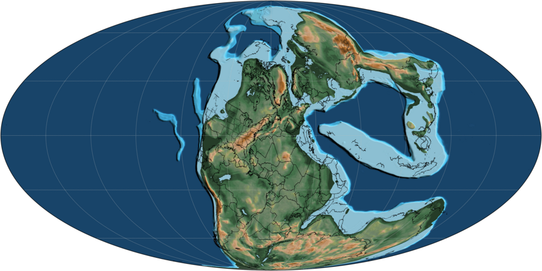
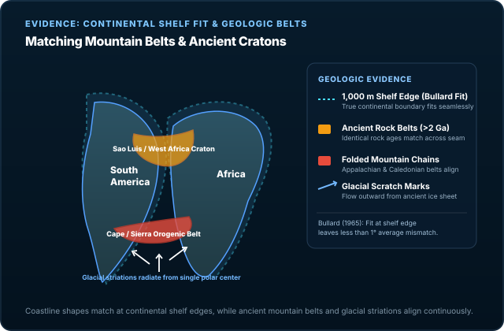
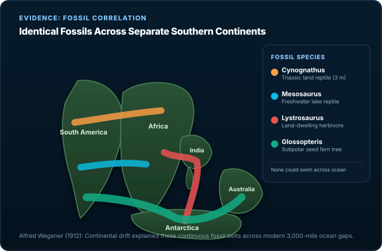
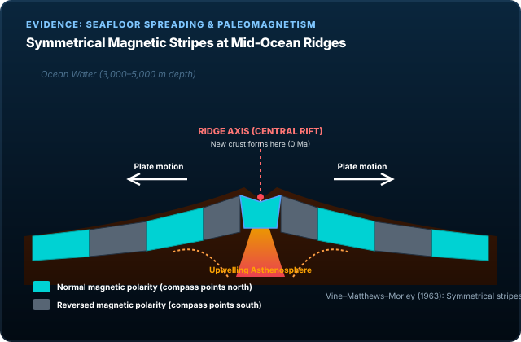

Concept 01
Pangaea was not permanent
Supercontinents assemble and break apart over hundreds of millions of years because tectonic plates keep moving beneath our feet.
Earth Science · Plate Tectonics
Explore 240 million years of plate motion using 25 local GPlates MULLER2019 snapshots spaced 10 million years apart. Every frame renders an actual model snapshot—we never cross-fade shapes or invent intermediate coastlines.
Most major landmasses are locked together in a single supercontinent surrounded by the global Panthalassa Ocean. The Atlantic Ocean has not opened yet, and the southern continents travel together as Gondwana.
Geography: GPlates Web Service, MULLER2019 model, anchor plate 0; EarthByte / University of Sydney, CC BY 4.0. Retrieved October 12, 2026. Modern outlines are reconstructed and simplified within 0.025° in longitude/latitude; they are not independently reconstructed paleo-shorelines. Compare the EarthByte model and paleogeography datasets.
Section 2 · Why Continents Move
Alfred Wegener noticed in 1912 that continents looked like torn pieces of a single newspaper. Explore the evidence that convinced geologists Earth’s crust really moves.
Concept 01
Supercontinents assemble and break apart over hundreds of millions of years because tectonic plates keep moving beneath our feet.
Concept 02
When crust stretches and splits, magma rises and cools into new oceanic basalt—building basins like the Atlantic Ocean.
Concept 03
India detached from Gondwana, raced north across the Tethys Ocean, and crashed into Asia, crumpling the crust into the Himalayas.
Concept 04
The Atlantic is still widening by ~2.5 cm/yr and Australia moves ~7 cm/yr north. Today’s world map is just one frame in an ongoing movie.


Evidence 01
South America and Africa fit best along their submerged continental shelves, and ancient rock belts match across the ocean gap.

Evidence 02
Freshwater reptiles and heavy-seeded ferns span continents now divided by wide oceans—clear proof those landmasses were once joined.

Evidence 03
Earth’s magnetic field flips periodically. New basalt at mid-ocean ridges records those flips like a two-sided geological tape recorder.
Section 3 · Interactive Model
Adjust the half-spreading rate, click Flip Magnetic Polarity to trigger a geomagnetic reversal, and click or drag across the ocean crust to inspect matching crust ages on opposite sides of the ridge.
Section 4 · Deep-Time Scale
Tectonic plates creep at only a few centimeters per year—about as fast as your fingernails grow. Multiply that tiny yearly motion by tens of millions of years to see why oceans open.
Section 5 · The Tectonic Engine
In 1912, meteorologist Alfred Wegener assembled compelling fossil, rock, and glacial clues for continental drift. Yet geologists initially rejected his hypothesis because he proposed continents plowed directly through solid ocean basalt powered by lunar tidal forces—a mechanism physicists proved was far too weak.
The 1960s discovery of seafloor spreading and plate tectonics revealed the true planetary engine: continents do not plow through oceanic crust; they ride passively atop rigid lithospheric plates moving over Earth’s ductile asthenosphere, driven by three forces:
1. Mantle Convection
Heat from Earth’s core and radioactive decay drives slow creeping convection cells in the ductile mantle (~1–10 cm/yr), circulating heat toward the surface.
2. Ridge Push
Mid-ocean ridges stand 2–3 km higher than abyssal plains because hot newly formed crust is buoyant. Gravity pushes elevated lithosphere down and outward from ridge crests.
3. Slab Pull (Dominant)
As oceanic lithosphere cools and ages away from ridges, it grows denser than the asthenosphere below. Sinking into subduction trenches, the cold slab pulls the entire plate behind it.
Section 6 · Check Your Understanding
Test your understanding of Wegener’s evidence, plate driving forces, and seafloor calculations.